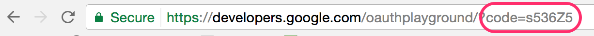

3. GET: authenticated iDs & permission
In a real world situation, you'll need to gather up iDs for researchers whose ORCID records you want to read, update, or associate with records in your own system AND get permission to take certain actions, like adding information to their ORCID records. In this section, we'll look at a few ways to get authenticated iDs and/or record access permission.
Authenticated iDs
ORCID is about disambiguation, it's important that you get the correct iD for each researcher. The best way to do this is to collect Authenticated ORCID iDs, which means that each researcher signs into their ORCID account and authorizes your system to obtain their iD. Learn more about Authenticated iDs
Record access permission
Control over access to data in your ORCID record is one of ORCID's core princples. While you can read public ORCID data without the record owner's involvement, some API actions require permission:
- Get an Authenticated ORCID iD
- Read non-public data (items with privacy set to 'Trusted parties')
- Add/update record data
Custom integration
The most customizable way to get Authenticated iDs is by building your own API integration. In this section, we'll walk through the steps that your own custom integration would need to complete in order to get an authenticated iD and record access permission.
OAuth 2.0
Getting an Authenticated iD and record access permission from a user involves following OAuth 2.0, an industry-standard protocol for authorization. OAuth allows a user to give a website or application access to account information stored on another site, without giving that site their password.
If you've ever signed into a site using Google or Facebook instead of your credentials for that particular site, you've already used OAuth!
The OAuth process includes 3 steps:
- Create an authorization URL
- Get an authorization code
- Exchange the authorization code for an access token
Get API credentials
API credentials consisting of a client ID and a client secret are needed in order to get Authenticated iDs and/or user permissions.
To get Authenticated iDs, you can use Public or Member API credentials. To get permission to read non-public information or add/update researchers' ORCID records, you'll need Member API credentials. For the rest of this tutorial, when referring to the API please assume that it is the Member API that is being referenced.
For this tutorial, please use your own sandbox API credentials.
To request API credentials, see Request API credentials
Three Step OAuth journey
Create an authorization URL
To kick off the OAuth process, we'll need to create a special authorization URL that sends users to an ORCID sign-in screen. This URL consists of Authorization endpoint, plus Parameters that identify your organization and the permissions you want to request.
Authorization endpoint (Sandbox)
https://sandbox.orcid.org/oauth/authorize
Parameters
| Parameter | Description | Example |
|---|---|---|
| client_id | Your Member or Public API client ID (issued by ORCID) To request API credentials, see Request API credentials |
[APP-*****************] |
| response_type | code |
|
| scope | API action(s) you want to request permission for, from the list of ORCID Scopes | /person/update /activities/update |
| redirect_uri | Page on your site that users will see after they complete the authorization process (must be on the list of allowed redirect URIs you specified when requesting your API credentials) | https://developers.google.com/oauthplayground |
To request permission to add/update activities (affiliations, funding, works, peer review items), and to add/update personal items (other-names, keywords, countries, researcher-urls, websites, and personal external identifiers) our authorization URL will be: Enter you own client ID where it says [APP-****************]
https://sandbox.orcid.org/oauth/authorize?client_id=[APP-****************]&response_type=code&scope=/read-limited%20/activities/update%20/person/update&redirect_uri=https://developers.google.com/oauthplayground
- Copy the URL, remembering to fill in your own APP details, paste it into a new tab and press enter.
- An ORCID sign-in screen will appear; sign into your Sandbox account to see the OAuth screen and click Authorize
- After granting permission, you'll be redirected to the Google OAuth Playground. A 6-character code will appear at the end of the redirect URI in the browser address bar (and under the Step 2 section on the left of the page)


Exchange authorization code for access token and authenticated iD
Once you have an Authorization Code, you can exchange it for an access token and the Authenticated iD of the user who signed in, which you'll need in order to take the API action(s) you requested permission for.
If you lose the access token you can complete the process again but first you would need to revoke permission for the client application if using the same ORCID iD. Permission can be revoked by removing the client application from the "Trusted organizations" section in Account settings.
In a real-world situation, this exchange would be done by your system, using a programming language such as PHP, Java, or Ruby on Rails. For this tutorial, we'll use Google OAuth Playground to simulate a web application.
- Click the gear icon in the upper right corner to open the OAuth 2.0 Configuration

-
Change the
Oauth endpointsdrop-down toCustomand enter the following settings and click CloseField Value OAuth flow Server-side OAuth endpoints Custom Authorization endpoint https://sandbox.orcid.org/oauth/authorizeToken endpoint https://sandbox.orcid.org/oauth/tokenaccess token location Authorization header w/Bearer prefix OAuth Client ID [APP-*****************]
(Demo client ID created for this tutorial)OAuth Client Secret 0000000-0000-0000-0000-000000000000
(Your own client secret created earlier - do not share API client secrets!) -
In the Step 2 Exchange authorization code for tokens section at left, click Exchange authorization code for tokens

- Your access aoken and Authenticated iD will appear Request/Response section at right.

Important! Keep the Google OAuth Playground open so that you don't lose the configurations you have made in the steps above. You can also save the URL that allows you to initialize the Playground with these configurations (to get the URL, click the link icon next to the gear icon in the upper right corner).
Once you have gone through this process to obtain the token, this is all that you need to do further API calls for this ORCID and for these permissions. If you want to make calls for another ORCID or you want to write to a record where before you have only read for example, then you will need to complete the process again and get a new access token.
Save this token
It is important to save the token you received in the step above as you can easily create any calls you need to make with it. If you lose the token you will have to go through the whole process above again.